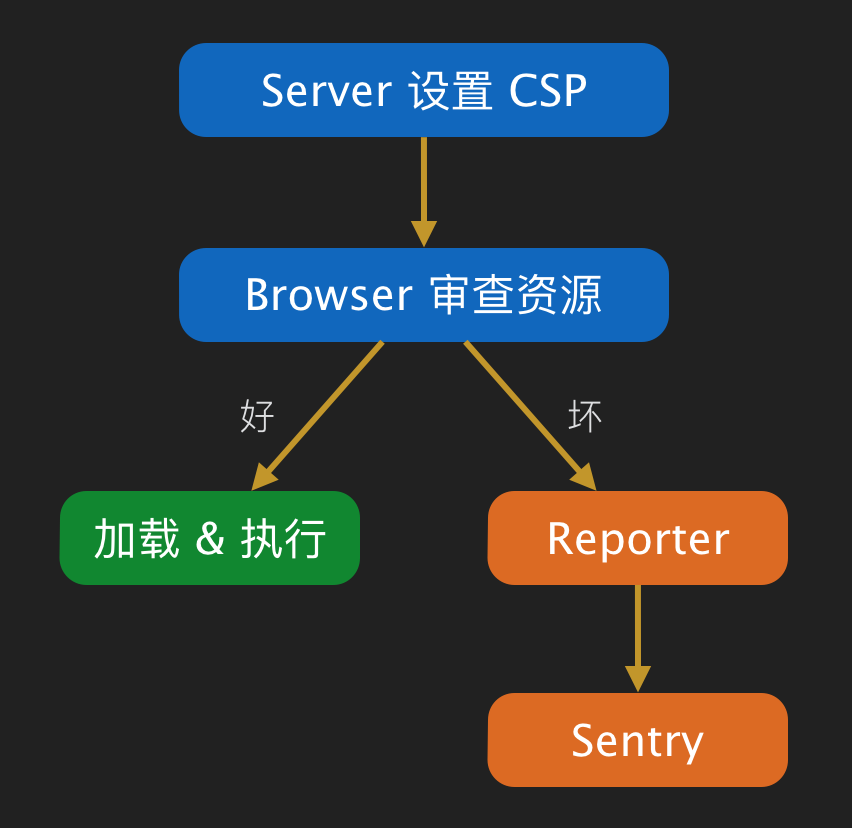

class: cover # Content Security Policy 防 XSS 利器 --- # 讲什么 .trigger-time.trigger-time--5em[ - 背景 - 方案 - 实施：中间件 / Reporter / Sentry - 未来 ] --- # 背景 .trigger-time.trigger-time--9em[ - Anti XSS - Anti XSS - Anti XSS ] --- ### The core issue exploited by XSS attacks is the browser’s inability to distinguish between script that’s intended to be part of your application, and script that’s been maliciously injected by a third-party --  --- # 方案 ## 资源白名单 -- .code-block[ ```bash Content-Security-Policy: script-src 'self' https://*.google.com ``` ] 通过 CSP header 让浏览器知道哪些资源是允许访问的 --- --- # 指令集 .trigger-time.trigger-time--2em[ - default-src - script-src, style-src, img-src, connect-src, font-src, object-src, media-src, frame-src - sandbox - report-uri ] --- # 其它 .trigger-time.trigger-time--3em[ - Content-Security-Policy-Report-Only - Meta ] .code-block[ ```bash <meta http-equiv="Content-Security-Policy" content="script-src 'self' https://*.google.com"> ``` ] --- # 兼容性 --- # 案例 ## PC 团购 .code-block[ ```bash Content-Security-Policy:default-src *.meituan.com *.meituan.net; script-src *.meituan.com *.meituan.net http://open.map.qq.com/ 'unsafe-inline' 'unsafe-eval'; style-src *.meituan.com *.meituan.net 'unsafe-inline'; img-src *.meituan.com *.meituan.net data: stats.g.doubleclick.net http://open.map.qq.com http://pr.map.qq.com http://*.map.gtimg.com; font-src *.meituan.com *.meituan.net data:; connect-src *.meituan.com https://*.meituan.com; report-uri http://fecsp.sankuai.com/report/www ``` ] --- # 实施  --- # Server 设置 CSP .code-block[ ```js // config/default.js module.exports = { csp: { 'default-src': ['*.meituan.net'], 'script-src': ['*.meituan.net', "'unsafe-inline'"] } }; // bootstrap var koalition = require('@mtfe/koalition'); var config = require('config'); var csp = require('@mtfe/turbo-csp'); var app = koalition({ config: config, port: 8080 }); app.use(csp).bootstrap(); ``` ] --- ### 页面特殊设置 .code-block[ ```js // page controller function* controller() { // page specific options this.cspOptions = { 'script-src': ['*.meituan.net', "'unsafe-inline'", 'map.baidu.com'] }; return { detail: 'something for display' }; } ``` ] [@mtfe/turbo-csp](http://npm.sankuai.com/package/@mtfe/turbo-csp) --- # Reporter 接收站点发来的违禁资源报告，并将其做一些转化处理，发送给 Sentry .code-block[ ```bash http://fecsp.sankuai.com/report/:sitename ``` ] 业务方想使用的话，需要联系 @shangchun 简单注册下 --- # Sentry --- # 未来 ## CSP Level 2 .trigger-time.trigger-time--3em[ - nonce-script, hash-script - 5 个新指令：base-uri, child-src, form-action, frame-ancestors, plugin-types - 更多请期待... ] --- # 参考 .trigger-time.trigger-time--3em[ - [CSP 1.0](http://www.w3.org/TR/2012/CR-CSP-20121115/) - [CSP Level 2](http://www.w3.org/TR/CSP/) - [An Introduction to Content Security Policy](http://www.html5rocks.com/en/tutorials/security/content-security-policy/) - [Preventing XSS with Content Security Policy](http://benvinegar.github.io/csp-talk-2013/) - [Content Security Policy Reference](http://content-security-policy.com/) ] --- name: last-page # Thanks